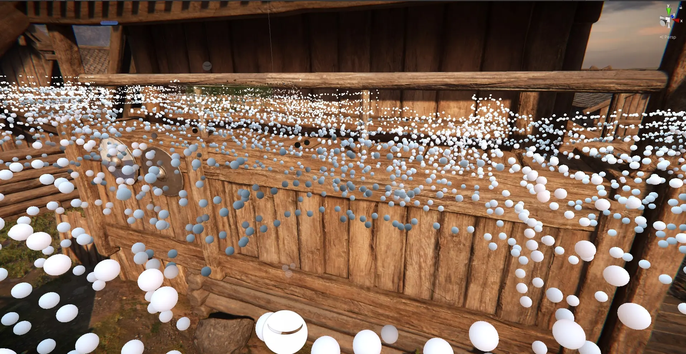
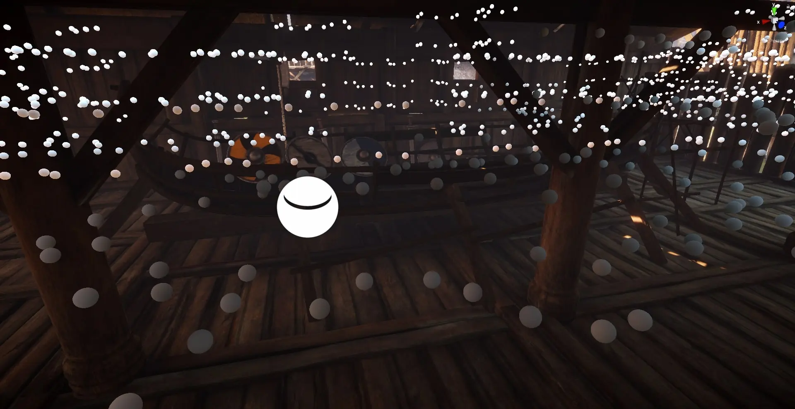
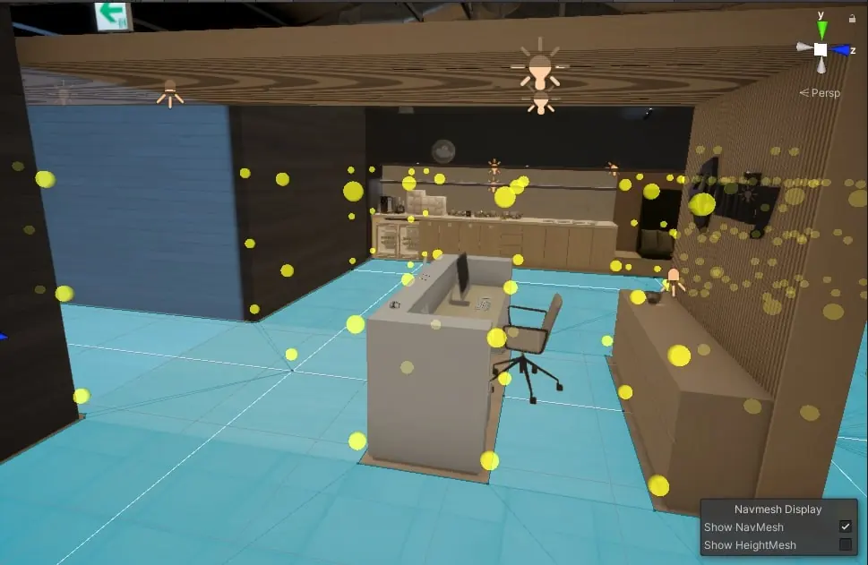
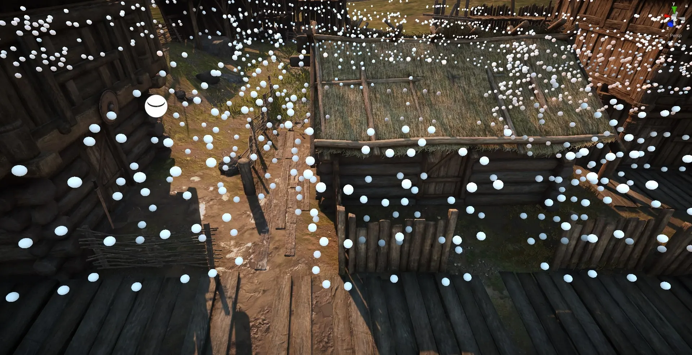
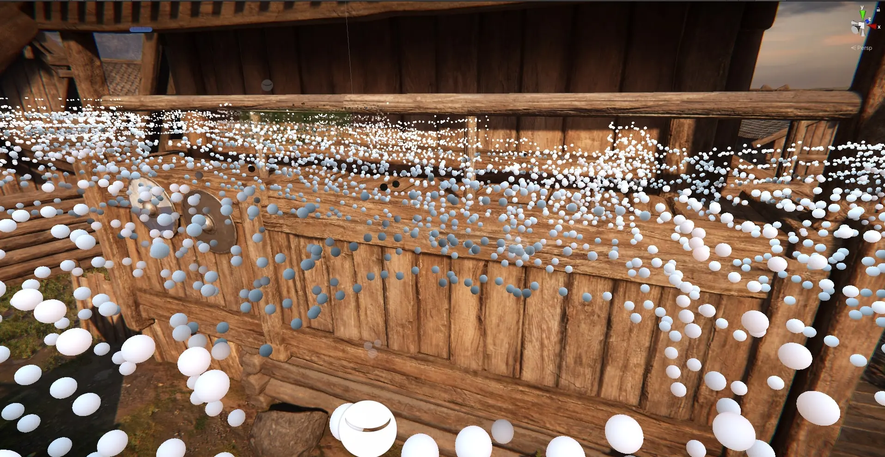
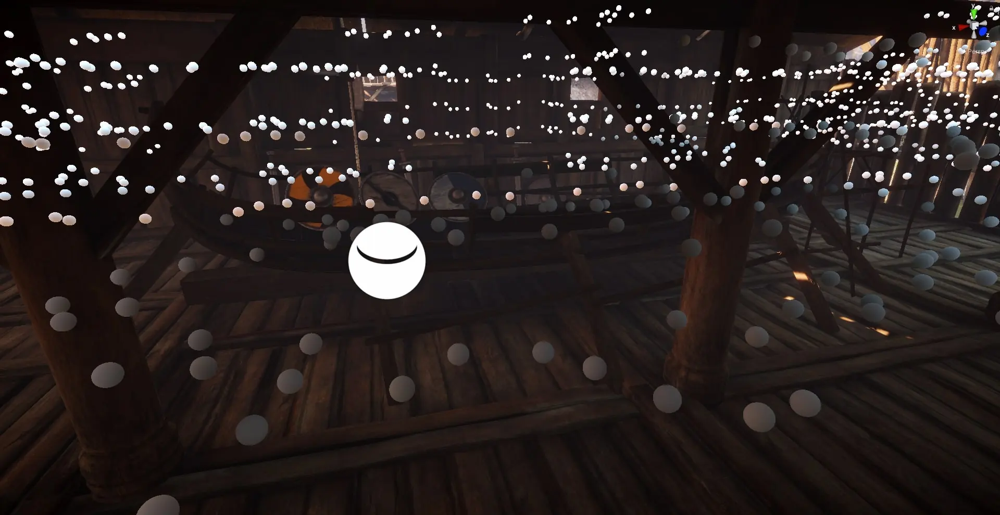
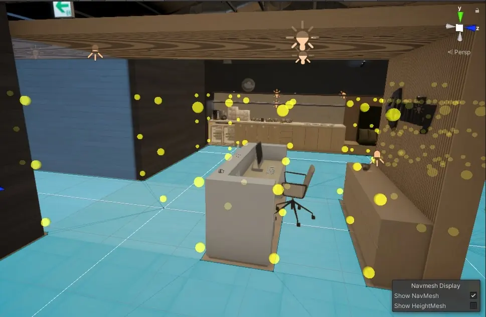
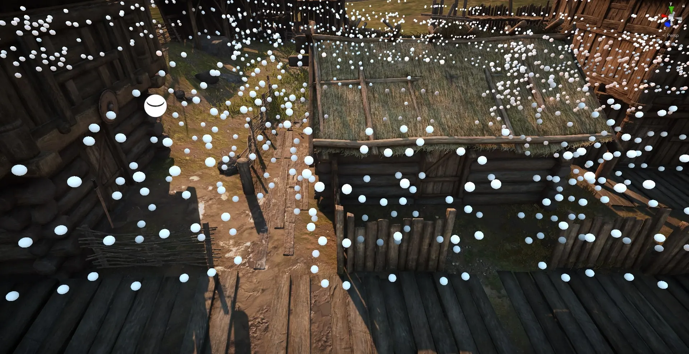
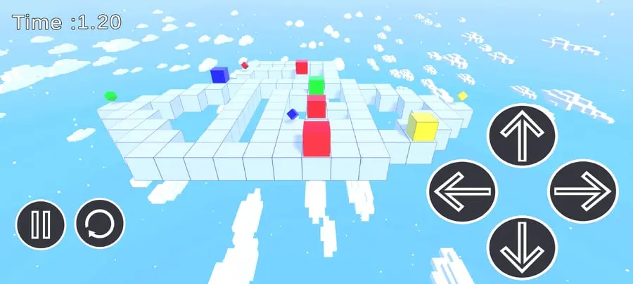
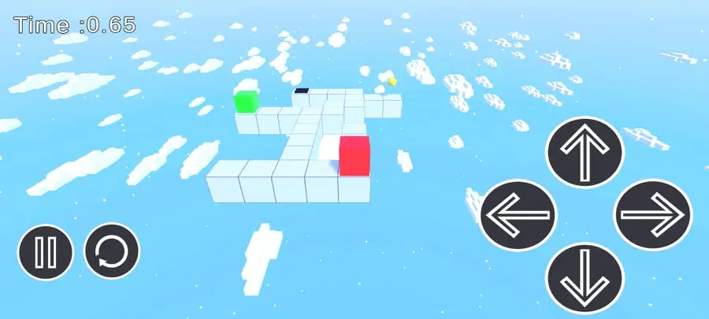

-
Forest Scene
Created in Unity 2019 HDRP
This scene was made as an experiment of mine to create a forest scene and get into level design more, changing the lighting, creating ambient music and some wind effects.
-
Music Visualizer
One of my first projects in Unity
Created a tool that captures the sound playing and based on frequency it changes the values of each cube.
-
Light Creation Tool
My thesis project
My thesis project was about improving the light creation in the Unity Engine.
Added buttons that recreate the lights(point,spot,area), the reflection probes and post process.
The biggest part of the project was the improvement of the Light Probes System.
The tool gives the ability to easily create a Light Probes Group based on the NavMesh in the scene in order for developers to quickly create templates of their probes.
It comes with features such as being able to select the rows of probes you want to make how close each probe will be with the next one and to avoid colliders based on a CheckSphere around each probe.
The tool can quickly place from a couple of probes to thousands all with the press of a button. -
 

-
Sky Cubes
My first android game published on the Play Store
This project was originally created for me to learn how to create a mobile game and in the process of doing so I realized I could turn this into a game and so I did with 20 puzzle levels and some skins the player can buy using the score he gets based on how fast he can finish a level. The project also offered the opportunity to learn how to implement save/load system and the Ads system.
-  
-
Check the rest of my games at my Itch.io
-
Currently working on
QA Automation frameworks check my github for updates...